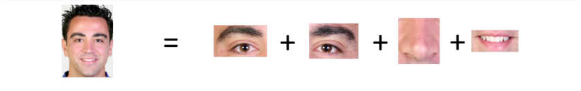
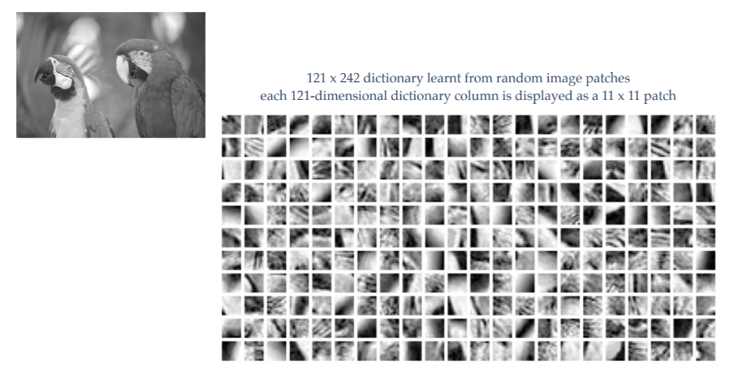

1. Introduction
Sparse dictionary learning is a representation learning method which aims at finding a sparse representation of the input data (also known as sparse coding) in the form of a linear combination of basic elements as well as those basic elements themselves. These elements are called atoms and they compose a dictionary. Atoms in the dictionary are not required to be orthogonal, and they may be an over-complete spanning set. This problem setup also allows the dimensionality of the signals being represented to be higher than the one of the signals being observed. The above two properties lead to having seemingly redundant atoms that allow multiple representations of the same signal but also provide an improvement in sparsity and flexibility of the representation.
One of the key principles of dictionary learning is that the dictionary has to be inferred from the input data. The emergence of sparse dictionary learning methods was stimulated by the fact that in signal processing one typically wants to represent the input data using as few components as possible. Before this approach the general practice was to use predefined dictionaries (such as fourier or wavelet transforms). However, in certain cases a dictionary that is trained to fit the input data can significantly improve the sparsity, which has applications in data decomposition, compression and analysis and has been used in the fields of image denoising and classification, video and audio processing. Sparsity and overcomplete dictionaries have immense applications in image compression, image fusion and inpainting.
If Dictionary contains more atoms than the dimension of the image signal then it is called as a ‘ Over Complete Dictionary ‘
K-means clustering is a type of unsupervised learning, which is used when you have unlabeled data (i.e., data without defined categories or groups). The goal of this algorithm is to find groups in the data, with the number of groups represented by the variable K. The algorithm works iteratively to assign each data point to one of K groups based on the features that are provided. Data points are clustered based on feature similarity. The results of the K-means clustering algorithm are:
1. The centroids of the K clusters, which can be used to label new data
2. Labels for the training data (each data point is assigned to a single cluster)
Rather than defining groups before looking at the data, clustering allows you to find and analyze the groups that have formed organically. The "Choosing K" section below describes how the number of groups can be determined.
Each centroid of a cluster is a collection of feature values which define the resulting groups. Examining the centroid feature weights can be used to qualitatively interpret what kind of group each cluster represents.
Spherical K-Means Clustering:
The Spherical K-means algorithm, i.e., the K-means algorithm with cosine similarity, is a popular method for clustering high-dimensional text data. In this algorithm, each vector as well as each cluster mean is represented as a high-dimensional unit-length vector. That is, each cluster mean vector is updated, only after all document vectors being assigned, as the (normalized) average of all the document vectors assigned to that cluster. It is very useful in clustering of large data sets. The basic methodology here is, firstly, we found the mean of whole data set and updated the whole data set by subtracting it from every vector. This differentiated each vector making closer ones go farther, and farther ones come. We then converted each data into a unit vector, assigned certain levels to each data set and found the mean vector of the respective levels. We later converted them into unit vectors too. A list is created which stores the vector indices present in the given cluster. This marks completion of one iteration. Dot product of each unit vector with every level means is calculated and the cluster mean which gets the maximum dot product stores the vector i.e. the list storing the indices is updated. New means of the updated clusters are calculated and are converted to unit mean vectors. Dot products of the new unit mean vectors and the previous unit mean vectors are calculated. If dot product values of all mean vectors are greater than threshold (In our code we used 0.99 as threshold), the process is terminated, else the next iteration starts and the whole process repeats.

